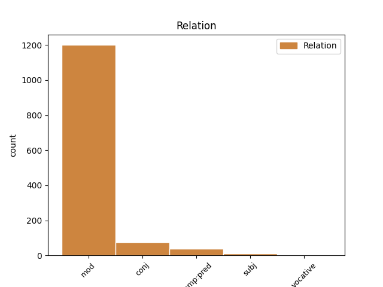
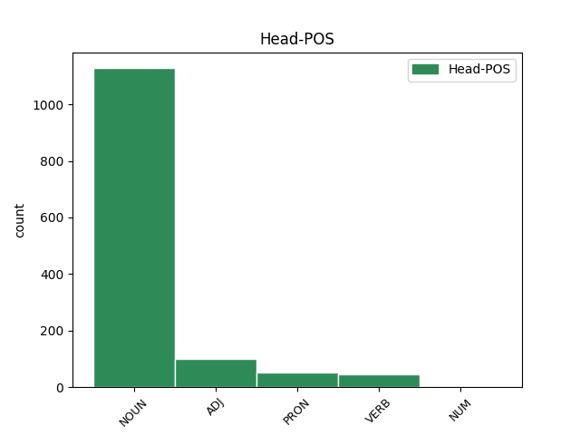
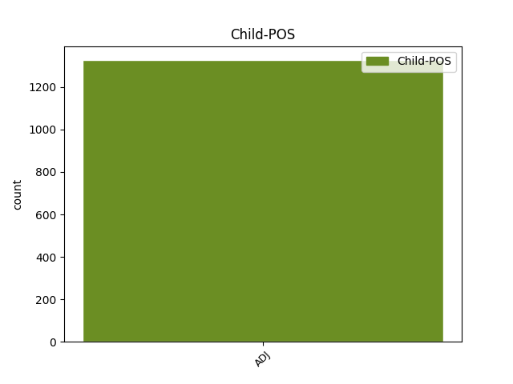

Distribution of features within this leaf



Agreement Rules sorted by frequency.
- When the dependent token is the modifer(mod) of the head token, and the head token is NOUN and the dependent token is ADJ.
1 Neque _ _ _ _ 0 _ _ _
2 enim _ _ _ _ 0 _ _ _
3 ante _ _ _ _ 0 _ _ _
4 dehiscent _ _ _ _ 0 _ _ _
5 attonitae _ _ _ _ 0 _ _ _
6 magna magnus ADJ a-p---nn- Case=Nom|Gender=Neut|Number=Plur 7 mod _ LId=magnus1
7 ora os NOUN n-p---nn- Case=Nom|Gender=Neut|Number=Plur 0 _ _ _
8 domus _ _ _ _ 0 _ _ _
9 . _ _ _ _ 0 _ _ _
10 ' _ _ _ _ 0 _ _ _
1 nunc _ _ _ _ 0 _ _ _
2 grege _ _ _ _ 0 _ _ _
3 de _ _ _ _ 0 _ _ _
4 intacto _ _ _ _ 0 _ _ _
5 septem _ _ _ _ 0 _ _ _
6 mactare _ _ _ _ 0 _ _ _
7 iuvencos juvencus ADJ a-p---ma- Case=Acc|Gender=Masc|Number=Plur 0 _ _ _
8 praestiterit _ _ _ _ 0 _ _ _
9 , _ _ _ _ 0 _ _ _
10 totidem _ _ _ _ 0 _ _ _
11 lectas _ _ _ _ 0 _ _ _
12 de _ _ _ _ 0 _ _ _
13 more _ _ _ _ 0 _ _ _
14 bidentes bidens ADJ a-p---fa- Case=Acc|Gender=Fem|Number=Plur 7 conj _ LId=bidens1|SpaceAfter=No
15 . _ _ _ _ 0 _ _ _
16 ' _ _ _ _ 0 _ _ _
1 veterani veteranus ADJ a-p---mn- Case=Nom|Gender=Masc|Number=Plur 0 _ _ _
2 pristinae _ _ _ _ 0 _ _ _
3 virtutis _ _ _ _ 0 _ _ _
4 memores memor ADJ a-p---mn- Case=Nom|Gender=Masc|Number=Plur 1 mod _ LId=memor1
5 comminus _ _ _ _ 0 _ _ _
6 acriter _ _ _ _ 0 _ _ _
7 instare _ _ _ _ 0 _ _ _
8 , _ _ _ _ 0 _ _ _
9 illi _ _ _ _ 0 _ _ _
10 haud _ _ _ _ 0 _ _ _
11 timidi _ _ _ _ 0 _ _ _
12 resistunt _ _ _ _ 0 _ _ _
13 : _ _ _ _ 0 _ _ _
1 nam _ _ _ _ 0 _ _ _
2 strenuissumus strenuus ADJ a-s---mns Case=Nom|Degree=Sup|Gender=Masc|Number=Sing 3 mod _ LId=strenuus1
3 quisque quisque PRON p-s---mn- Case=Nom|Gender=Masc|Number=Sing 0 _ _ _
4 aut _ _ _ _ 0 _ _ _
5 occiderat _ _ _ _ 0 _ _ _
6 in _ _ _ _ 0 _ _ _
7 proelio _ _ _ _ 0 _ _ _
8 aut _ _ _ _ 0 _ _ _
9 graviter _ _ _ _ 0 _ _ _
10 volneratus _ _ _ _ 0 _ _ _
11 discesserat _ _ _ _ 0 _ _ _
12 . _ _ _ _ 0 _ _ _
1 at _ _ _ _ 0 _ _ _
2 ex _ _ _ _ 0 _ _ _
3 altera _ _ _ _ 0 _ _ _
4 parte _ _ _ _ 0 _ _ _
5 C _ _ _ _ 0 _ _ _
6 . _ _ _ _ 0 _ _ _
7 Antonius Antonius NOUN n-s---mn- Case=Nom|Gender=Masc|Number=Sing 0 _ _ _
8 , _ _ _ _ 0 _ _ _
9 pedibus _ _ _ _ 0 _ _ _
10 aeger aeger ADJ a-s---mn- Case=Nom|Gender=Masc|Number=Sing 7 comp:pred _ LId=aeger1
11 quod _ _ _ _ 0 _ _ _
12 proelio _ _ _ _ 0 _ _ _
13 adesse _ _ _ _ 0 _ _ _
14 nequibat _ _ _ _ 0 _ _ _
15 , _ _ _ _ 0 _ _ _
16 M _ _ _ _ 0 _ _ _
17 . _ _ _ _ 0 _ _ _
18 Petreio _ _ _ _ 0 _ _ _
19 legato _ _ _ _ 0 _ _ _
20 exercitum _ _ _ _ 0 _ _ _
21 permittit _ _ _ _ 0 _ _ _
22 . _ _ _ _ 0 _ _ _
1 quae _ _ _ _ 0 _ _ _
2 tu tu PRON p-s---fn- Case=Nom|Gender=Fem|Number=Sing 0 _ _ _
3 viva vivus ADJ a-s---fn- Case=Nom|Gender=Fem|Number=Sing 2 comp:pred _ LId=vivus1
4 mea _ _ _ _ 0 _ _ _
5 possis _ _ _ _ 0 _ _ _
6 sentire _ _ _ _ 0 _ _ _
7 favilla _ _ _ _ 0 _ _ _
8 ! _ _ _ _ 0 _ _ _
1 Talibus _ _ _ _ 0 _ _ _
2 adfata _ _ _ _ 0 _ _ _
3 Aenean _ _ _ _ 0 _ _ _
4 ( _ _ _ _ 0 _ _ _
5 nec _ _ _ _ 0 _ _ _
6 sacra sacer ADJ a-p---na- Case=Acc|Gender=Neut|Number=Plur 8 mod _ LId=sacer1
7 morantur _ _ _ _ 0 _ _ _
8 iussa jubeo VERB v-prppna- Aspect=Perf|Case=Acc|Gender=Neut|Number=Plur|Tense=Past|VerbForm=Part|Voice=Pass 0 _ _ _
9 viri _ _ _ _ 0 _ _ _
10 ) _ _ _ _ 0 _ _ _
11 , _ _ _ _ 0 _ _ _
12 Teucros _ _ _ _ 0 _ _ _
13 vocat _ _ _ _ 0 _ _ _
14 alta _ _ _ _ 0 _ _ _
15 in _ _ _ _ 0 _ _ _
16 templa _ _ _ _ 0 _ _ _
17 sacerdos _ _ _ _ 0 _ _ _
18 . _ _ _ _ 0 _ _ _
1 ab _ _ _ _ 0 _ _ _
2 iis _ _ _ _ 0 _ _ _
3 centuriones centurio NOUN n-p---ma- Case=Acc|Gender=Masc|Number=Plur 0 _ _ _
4 , _ _ _ _ 0 _ _ _
5 omnis omnis ADJ a-p---ma- Case=Acc|Gender=Masc|Number=Plur 3 conj _ LId=omnis1
6 lectos _ _ _ _ 0 _ _ _
7 et _ _ _ _ 0 _ _ _
8 evocatos _ _ _ _ 0 _ _ _
9 , _ _ _ _ 0 _ _ _
10 praeterea _ _ _ _ 0 _ _ _
11 ex _ _ _ _ 0 _ _ _
12 gregariis _ _ _ _ 0 _ _ _
13 militibus _ _ _ _ 0 _ _ _
14 optumum _ _ _ _ 0 _ _ _
15 quemque _ _ _ _ 0 _ _ _
16 armatum _ _ _ _ 0 _ _ _
17 in _ _ _ _ 0 _ _ _
18 primam _ _ _ _ 0 _ _ _
19 aciem _ _ _ _ 0 _ _ _
20 subducit _ _ _ _ 0 _ _ _
21 . _ _ _ _ 0 _ _ _
1 licuit _ _ _ _ 0 _ _ _
2 vobis _ _ _ _ 0 _ _ _
3 cum _ _ _ _ 0 _ _ _
4 summa _ _ _ _ 0 _ _ _
5 turpitudine _ _ _ _ 0 _ _ _
6 in _ _ _ _ 0 _ _ _
7 exilio _ _ _ _ 0 _ _ _
8 aetatem _ _ _ _ 0 _ _ _
9 agere _ _ _ _ 0 _ _ _
10 , _ _ _ _ 0 _ _ _
11 potuistis _ _ _ _ 0 _ _ _
12 nonnulli _ _ _ _ 0 _ _ _
13 Romae _ _ _ _ 0 _ _ _
14 amissis amitto VERB v-prppnb- Aspect=Perf|Case=Abl|Gender=Neut|Number=Plur|Tense=Past|VerbForm=Part|Voice=Pass 0 _ _ _
15 bonis bonus ADJ a-p---nb- Case=Abl|Gender=Neut|Number=Plur 14 subj _ LId=bonus1
16 alienas _ _ _ _ 0 _ _ _
17 opes _ _ _ _ 0 _ _ _
18 expectare _ _ _ _ 0 _ _ _
19 : _ _ _ _ 0 _ _ _
1 irati irascor VERB v-prppmn- Aspect=Perf|Case=Nom|Gender=Masc|Number=Plur|Tense=Past|VerbForm=Part|Voice=Pass 0 _ _ _
2 que _ _ _ _ 0 _ _ _
3 infesti infestus ADJ a-p---mn- Case=Nom|Gender=Masc|Number=Plur 1 conj _ LId=infestus1
4 sunt _ _ _ _ 0 _ _ _
5 . _ _ _ _ 0 _ _ _
1 post _ _ _ _ 0 _ _ _
2 ubi _ _ _ _ 0 _ _ _
3 contagio _ _ _ _ 0 _ _ _
4 quasi _ _ _ _ 0 _ _ _
5 pestilentia _ _ _ _ 0 _ _ _
6 invasit _ _ _ _ 0 _ _ _
7 , _ _ _ _ 0 _ _ _
8 civitas _ _ _ _ 0 _ _ _
9 inmutata _ _ _ _ 0 _ _ _
10 , _ _ _ _ 0 _ _ _
11 imperium _ _ _ _ 0 _ _ _
12 ex _ _ _ _ 0 _ _ _
13 iustissumo _ _ _ _ 0 _ _ _
14 atque _ _ _ _ 0 _ _ _
15 optumo _ _ _ _ 0 _ _ _
16 crudele crudelis ADJ a-s---nn- Case=Nom|Gender=Neut|Number=Sing 19 comp:pred _ LId=crudelis1
17 que _ _ _ _ 0 _ _ _
18 intolerandum _ _ _ _ 0 _ _ _
19 factum facio VERB v-srppnn- Aspect=Perf|Case=Nom|Gender=Neut|Number=Sing|Tense=Past|VerbForm=Part|Voice=Pass 0 _ _ _
20 . _ _ _ _ 0 _ _ _
1 quod _ _ _ _ 0 _ _ _
2 si _ _ _ _ 0 _ _ _
3 forte _ _ _ _ 0 _ _ _
4 tuis _ _ _ _ 0 _ _ _
5 non _ _ _ _ 0 _ _ _
6 est _ _ _ _ 0 _ _ _
7 contraria _ _ _ _ 0 _ _ _
8 votis _ _ _ _ 0 _ _ _
9 , _ _ _ _ 0 _ _ _
10 at _ _ _ _ 0 _ _ _
11 tibi _ _ _ _ 0 _ _ _
12 curarum _ _ _ _ 0 _ _ _
13 milia mille NUM m-p---na- Case=Acc|Gender=Neut|Number=Plur 0 _ _ _
14 quanta quantus ADJ a-p---na- Case=Acc|Gender=Neut|Number=Plur 13 mod _ LId=quantus1
15 dabit _ _ _ _ 0 _ _ _
16 ! _ _ _ _ 0 _ _ _
1 Colonias _ _ _ _ 0 _ _ _
2 in _ _ _ _ 0 _ _ _
3 Africa _ _ _ _ 0 _ _ _
4 , _ _ _ _ 0 _ _ _
5 Sicilia _ _ _ _ 0 _ _ _
6 , _ _ _ _ 0 _ _ _
7 Macedonia _ _ _ _ 0 _ _ _
8 , _ _ _ _ 0 _ _ _
9 utraque _ _ _ _ 0 _ _ _
10 Hispania _ _ _ _ 0 _ _ _
11 , _ _ _ _ 0 _ _ _
12 Achaia _ _ _ _ 0 _ _ _
13 , _ _ _ _ 0 _ _ _
14 Asia _ _ _ _ 0 _ _ _
15 , _ _ _ _ 0 _ _ _
16 Syria _ _ _ _ 0 _ _ _
17 , _ _ _ _ 0 _ _ _
18 Gallia _ _ _ _ 0 _ _ _
19 Narbonensi _ _ _ _ 0 _ _ _
20 , _ _ _ _ 0 _ _ _
21 Pisidia _ _ _ _ 0 _ _ _
22 militum _ _ _ _ 0 _ _ _
23 deduxi _ _ _ _ 0 _ _ _
24 Italia _ _ _ _ 0 _ _ _
25 autem _ _ _ _ 0 _ _ _
26 XXVIII _ _ _ _ 0 _ _ _
27 colonias _ _ _ _ 0 _ _ _
28 quae _ _ _ _ 0 _ _ _
29 vivo vivus ADJ a-s---mb- Case=Abl|Gender=Masc|Number=Sing 30 subj _ _
30 me ego PRON p-s---mb- Case=Abl|Gender=Masc|Number=Sing 0 _ _ _
31 celeberrimae _ _ _ _ 0 _ _ _
32 et _ _ _ _ 0 _ _ _
33 frequentissimae _ _ _ _ 0 _ _ _
34 fuerunt _ _ _ _ 0 _ _ _
35 mea _ _ _ _ 0 _ _ _
36 auctoritate _ _ _ _ 0 _ _ _
37 deductas _ _ _ _ 0 _ _ _
38 habet _ _ _ _ 0 _ _ _
39 . _ _ _ _ 0 _ _ _
Disagree Examples:
1 Successus successus NOUN n-s---mn- Case=Nom|Gender=Masc|Number=Sing 0 _ _ _
2 improborum improbus ADJ a-p---mg- Case=Gen|Gender=Masc|Number=Plur 1 mod _ _
3 plures _ _ _ _ 0 _ _ _
4 allicit _ _ _ _ 0 _ _ _
5 . _ _ _ _ 0 _ _ _
1 Quantum quantus ADJ a-s---na- Case=Acc|Gender=Neut|Number=Sing 0 _ _ _
2 homo _ _ _ _ 0 _ _ _
3 bilinguis _ _ _ _ 0 _ _ _
4 saepe _ _ _ _ 0 _ _ _
5 concinnet _ _ _ _ 0 _ _ _
6 mali malus ADJ a-s---ng- Case=Gen|Gender=Neut|Number=Sing 1 mod _ LId=malus1|SpaceAfter=No
7 , _ _ _ _ 0 _ _ _
8 Documentum _ _ _ _ 0 _ _ _
9 habere _ _ _ _ 0 _ _ _
10 stulta _ _ _ _ 0 _ _ _
11 credulitas _ _ _ _ 0 _ _ _
12 potest _ _ _ _ 0 _ _ _
13 . _ _ _ _ 0 _ _ _
1 Suspicione _ _ _ _ 0 _ _ _
2 si _ _ _ _ 0 _ _ _
3 quis _ _ _ _ 0 _ _ _
4 errabit _ _ _ _ 0 _ _ _
5 sua _ _ _ _ 0 _ _ _
6 Et _ _ _ _ 0 _ _ _
7 rapiet _ _ _ _ 0 _ _ _
8 ad _ _ _ _ 0 _ _ _
9 se _ _ _ _ 0 _ _ _
10 quod _ _ _ _ 0 _ _ _
11 erit _ _ _ _ 0 _ _ _
12 commune communis ADJ a-s---nn- Case=Nom|Gender=Neut|Number=Sing 0 _ _ _
13 omnium omnis ADJ a-p---mg- Case=Gen|Gender=Masc|Number=Plur 12 mod _ SpaceAfter=No
14 , _ _ _ _ 0 _ _ _
15 Stulte _ _ _ _ 0 _ _ _
16 nudabit _ _ _ _ 0 _ _ _
17 animi _ _ _ _ 0 _ _ _
18 conscientiam _ _ _ _ 0 _ _ _
19 . _ _ _ _ 0 _ _ _
1 Luat _ _ _ _ 0 _ _ _
2 inquit _ _ _ _ 0 _ _ _
3 poenas _ _ _ _ 0 _ _ _
4 causa causa NOUN n-s---fb- Case=Abl|Gender=Fem|Number=Sing 0 _ _ _
5 libertus _ _ _ _ 0 _ _ _
6 mali malus ADJ a-s---ng- Case=Gen|Gender=Neut|Number=Sing 4 mod _ LId=malus1|SpaceAfter=No
7 ; _ _ _ _ 0 _ _ _
1 Hoc _ _ _ _ 0 _ _ _
2 admonere _ _ _ _ 0 _ _ _
3 simplices _ _ _ _ 0 _ _ _
4 etiam _ _ _ _ 0 _ _ _
5 potest _ _ _ _ 0 _ _ _
6 , _ _ _ _ 0 _ _ _
7 Opinione opinio NOUN n-s---fb- Case=Abl|Gender=Fem|Number=Sing 0 _ _ _
8 alterius alter ADJ a-s---mg- Case=Gen|Gender=Masc|Number=Sing 7 mod _ _
9 ne _ _ _ _ 0 _ _ _
10 quid _ _ _ _ 0 _ _ _
11 ponderent _ _ _ _ 0 _ _ _
12 : _ _ _ _ 0 _ _ _